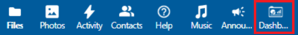

Managing Groups, Users and Access Rights
Project owners can invite internal and external collaborators to a project folder. Below you can find detailed instructions for this.
Inviting internal and external collaborators
The owner of the project folder can create new accounts and grant access through the following steps.
Inviting a new user
If a prospective user does not yet have a Research Drive account, the owner needs to invite them. Instructions for this process are in the current section. If a user does already have a Research Drive account, you can skip to the instructions about granting rights to groups and single users.
After having logged into Research Drive, select in the top menu bar: Dashboard > User accounts (2nd tab) > Invite user.

Enter the initials and last name and the email in the pop-up window, if available use the e-mail of their research institute or university. All VU email accounts are automatically required to use Multi-Factor Authentication (MFA). This is most commonly done through the Tiqr or Azure app. VU students do not automatically have MFA activated on their account. They can set this up by visiting the IT ServiceDesk, bringing an official ID.
Contributors from outside VU Amsterdam will need to create an eduID account to log into Research Drive. An instruction on how to do this can be found on SURF’s Research Drive Wiki. Additionally, it is important to turn on the MFA step in the eduID account. This is a requirement to better protect the data stored in VU Research Drive. It is greatly preferred that external contributors use the email address provided to them by their institution or workplace. Research Drive functional managers discourage the use of personal email addresses.
Granting access rights to groups
The best practice for Research Drive is to create groups (‘Teams’) to which roles and rights can be awarded. Using Teams, it is easier to keep track of which rights a group should have, and it is easier to revoke these rights as well. The steps to create a Team are as follows:
- Click on the ‘Contacts’ button on the Research Drive top bar.
- In the left-hand side of the screen, click the ‘Plus’-icon next to Teams. This allows you to create a Team and name it descriptively.
- Add the right users as members of the Team. You can also make existing Teams members of the new Team.
- Navigating back to the project folder, you can share appropriate files or folders with the correct Team(s).
This process is explained in more detail, with screenshots, in SURF’s wiki.
The following rights can be given out:
- Create (Grants the ability to create new documents or upload them into a folder).
- Edit (Grants the ability to make alterations to documents).
- Share (this enables the user to invite new users to RD and afterward this user can grant them access to the parts of your project folder they have access to. In general, we discourage granting these rights. If many people have share rights, it can become difficult to have an overview of which user has access to the data, and revoking rights may also prove complicated).
- Delete (Grants the ability to delete files or folders. This right may not be necessary for most users to have).
Please also read the Do’s and Don’ts of Sharing to stick to the best practices of these functionalities, as formulated by SURF.
Granting access rights to single users
It does happen sometimes that a single user, rather than a group, needs to get access to a specific (sub)folder or file. For example when individual contributors need to share data with you, but should not see each other’s data, so they get their own subfolder. When a new user has activated their account, you will receive an email confirming this. At this point you can grant them access to your entire project folder or only to a specific subfolder / several subfolders. After each folder or document you will see the term “Shared”. If you click on the term “Shared” you will see an overview of all users who have access rights to this folder or document. By using the search function and selecting a user you can grant various rights (Can view/Can edit/Custom permissions) to this user. If the user needs specific rights you can click on “Custom permissions”.
The following rights can be given out:
- Create (Grants the ability to create new documents or upload them into a folder).
- Edit (Grants the ability to make alterations to documents).
- Share (this enables the user to invite new users to RD and afterward this user can grant them access to the parts of your project folder they have access to. In general, we discourage granting these rights. If many people have share rights, it can become difficult to have an overview of which user has access to the data, and revoking rights may also prove complicated).
- Delete (Grants the ability to delete files or folders. This right may not be necessary for most users to have).
Please also read the Do’s and Don’ts of Sharing to stick to the best practices of these functionalities, as formulated by SURF.